I am a computational engineering researcher, using numerical methods and high-performance computing to study physical problems in energy, transportation, and aerospace.
I work with a diverse and exciting group of students on these topics;
publishing in combustion, energy, and computational physics communities;
and then presenting and teaching our work in the world.
We study mainly fluid dynamics phenomena using computer simulations, particularly fluid flows
involving chemical reactions such as combustion. Our work extends from
analyzing and simplifying chemical kinetic reaction models for transportation fuels,
to developing surrogate models for predicting properties of fuels and chemicals,
and even to computationally expensive, direct numerical simulations of turbulent combustion.
We develop and apply methods to simulate combustion and other fluid-flow problems,
including in wildfires and the ocean.
We also write a lot of code!
Want to do research with me?
Read about my lab.
Contributions
My lab and I have made many contributions since since I started doing research in 2008.
Here are some of the highlights from our work.
How I describe these is always evolving as we learn more.
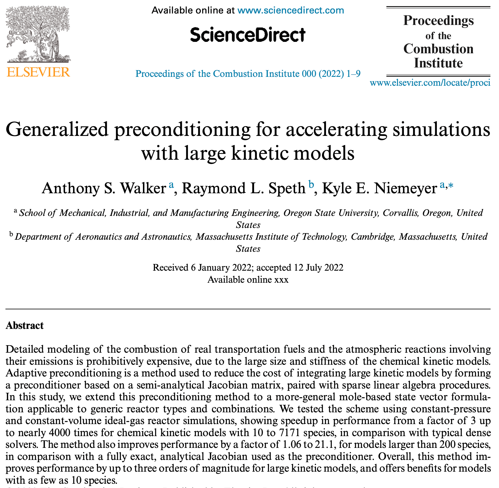
We can significantly accelerate integration of chemical kinetics by providing some system knowledge to the algorithm and using efficient sparse linear algebra operations. (2023) Implemented in the open-source library Cantera, benefits appear for even very small models, and we see performance gains of up to 1000 times for large models.
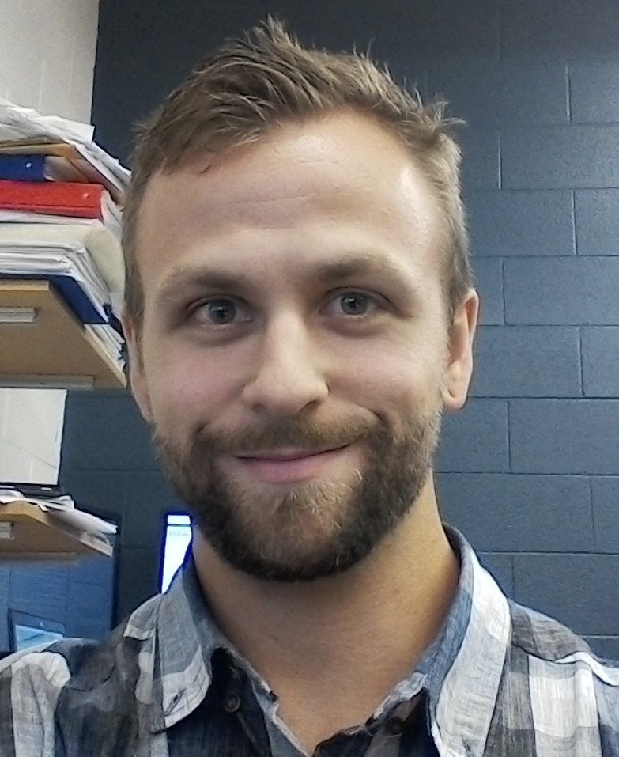 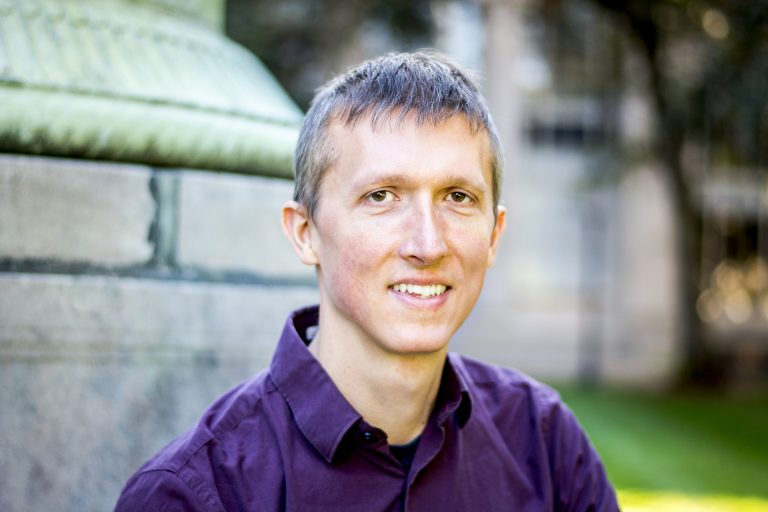
ODEschemical kineticslinear algebraCanteraintegrators 📄papers
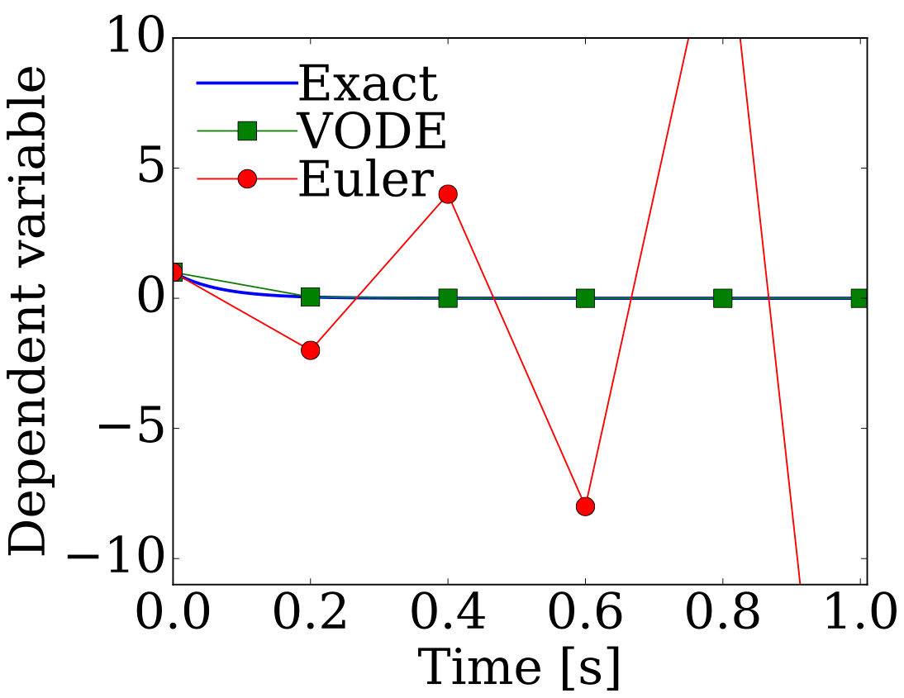
Appropriately chosen integration algorithms can allow GPUs to efficiently integrate stiff chemistry needed in reacting flow simulations. (2014 — 2023) Particular algorithms parallelize more efficiently on GPUs.
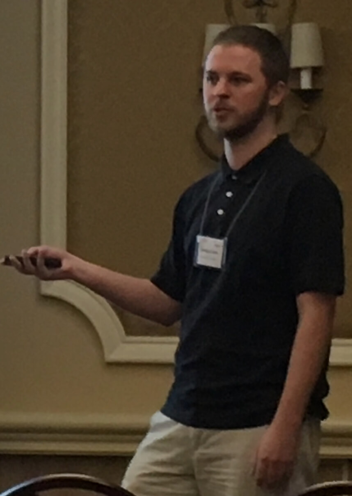
GPUsODEschemical kineticsintegrators 📄papers
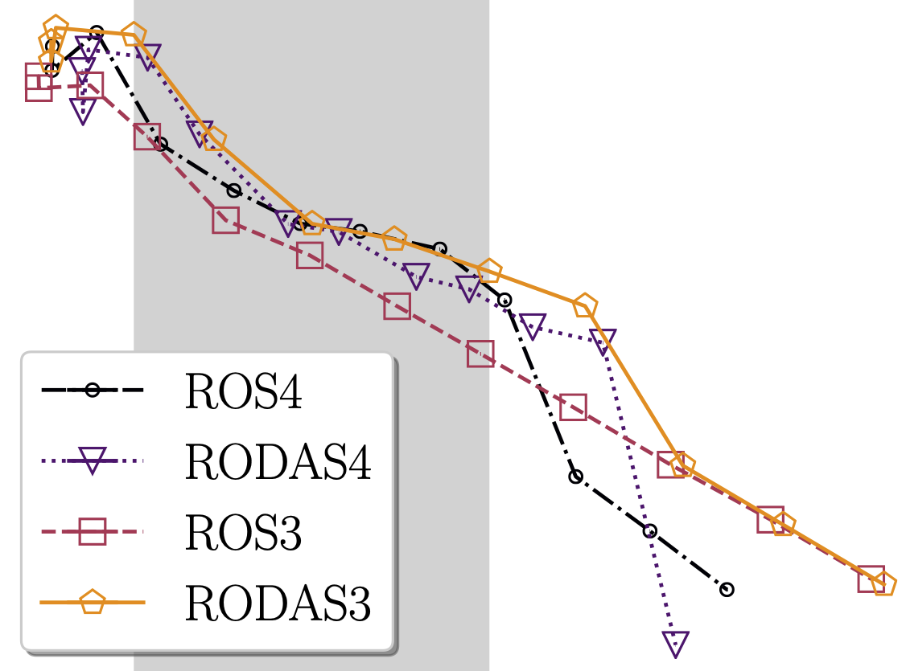
Vectorized operations are a path to speeding up the integration of chemical kinetics in reacting-flow simulations. (2018 — 2022) But it requires careful selection of integration algorithm, and may lead to new load-balancing issues.
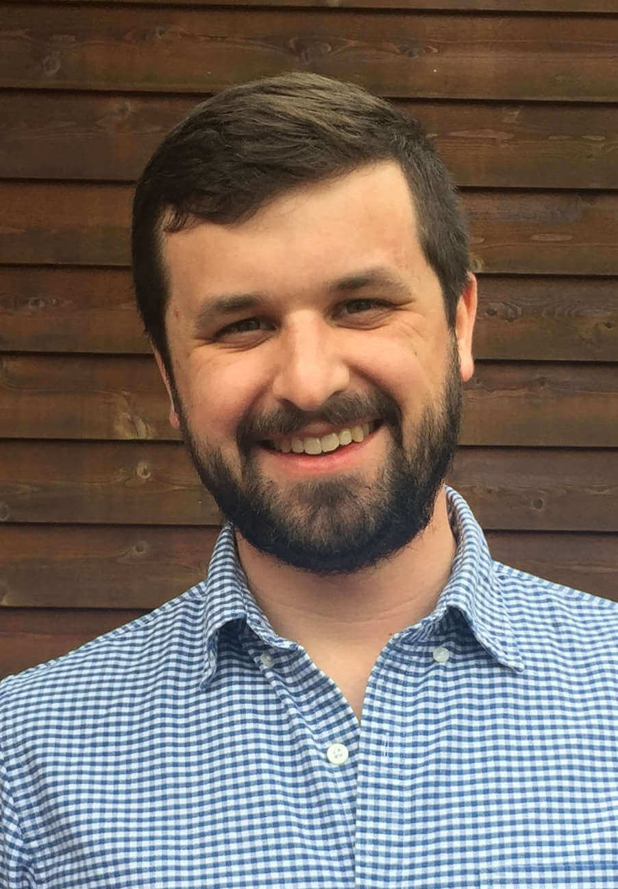
ODEsvectorizationchemical kineticsintegrators 📄papers
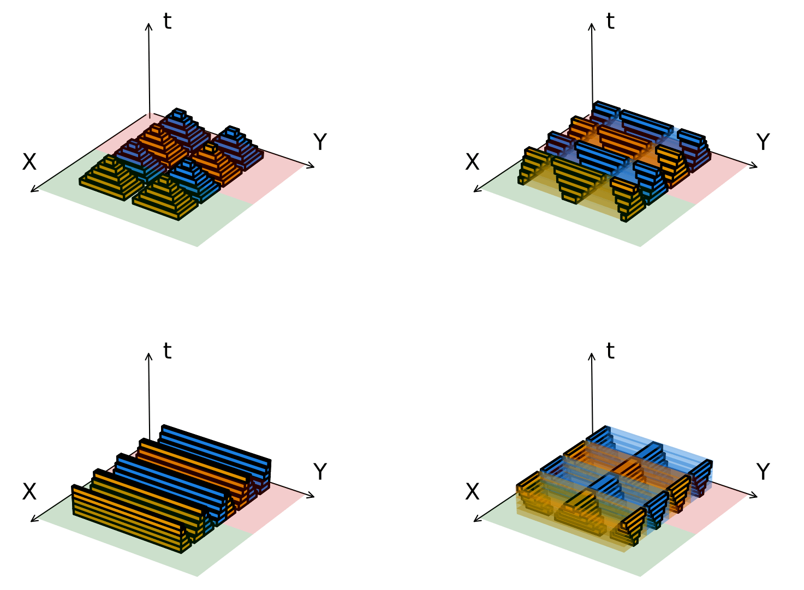
Advancing computations inside domains of time and space dependence can improve performance by reducing network communication. (2018 — 2021) Getting a performance benefit in heterogeneous combinations of CPU and GPU systems depends strongly on configuration details and you can see drops in performance instead.
domain decompositioncomputational fluid dynamicsGPUsswept rule 📄papers
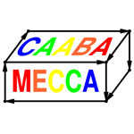
Model reduction methods developed for combustion chemical kinetics can be successfully extended to atmospheric and ocean biogeochemical models. (2019) But algorithms need to be adapted to handle the unique characteristics of different systems, such as non-elementary reactions.
model reductionbiogeochemistryatmospheric chemistry 📄papers
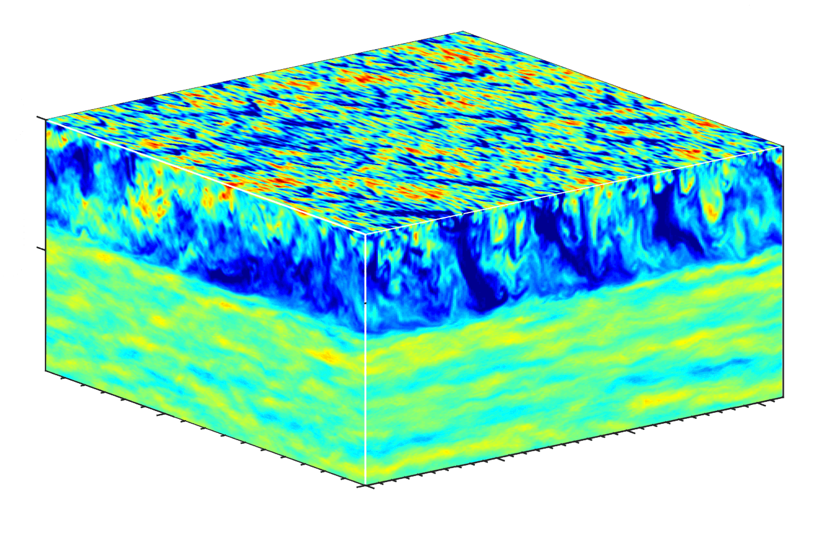
Predicting the amount of carbon taken up by the ocean requires accurately capturing the interactins between ocean turbulence and biogeochemistry. (2019) Simulating the interaction between Langmuir turbulence and ocean biogeochemistry requires applying model reduction methods from combustion.
biogeochemistryoceanturbulence 📄papers
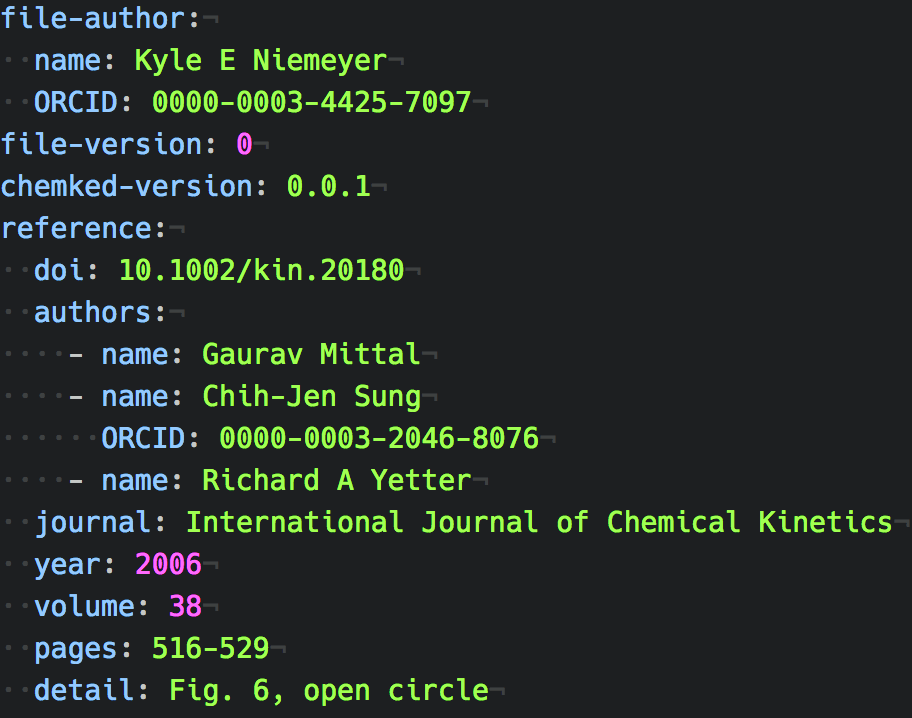
A human- and machine-readable format allows us to easily describe measurements from fundamental experiments in combustion. (2018) The ChemKED format allows describing fundamental experiments in combustion in a human- and machine-readable way, including descriptions of uncertainty.
ChemKEDparameter databasesexperimental measurements 📄papers
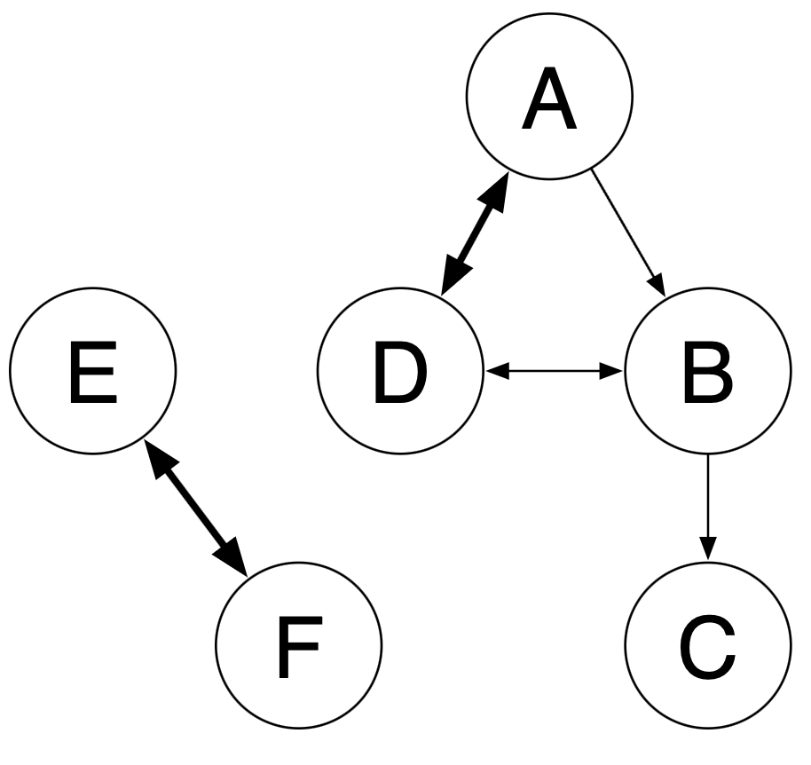
Large chemical kinetic models can be automatically reduced using a strategy with multiple reduction stages. (2010 — 2017) We can significantly reduce the size and complexity of detailed kinetic models, but only so far, before removing components introduces unacceptable error.
model reductionchemical kineticsreduction algorithms 📄papers